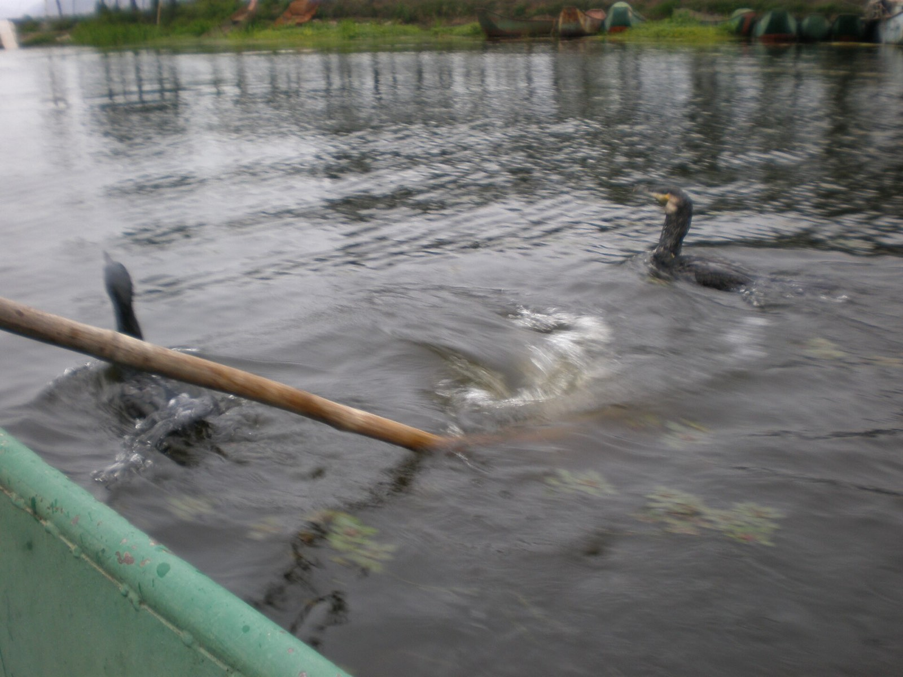

REVIVE · 焕新居
给自己的日子，透一口气
1 – 3 个月 · 数字游民 · 间隔年 · 创作者
生活卡在同一条轨道上太久了——固定的班、固定的街、固定的自己。焕新居是给自己的生活开一扇透气窗：来到云南，住进一间安顿好的院子，网络稳定、社群在侧，日子从菜市场和晨光开始。不用辞职，也能换一口气。
聊聊想换的活法生活方式 · REVIVE / SETTLE / WORK
同样在云南住进日子，换一种过法：给日子透口气、退休安顿下来、或以工换住边养边做。
1 – 3 个月 · 数字游民 · 间隔年 · 创作者
生活卡在同一条轨道上太久了——固定的班、固定的街、固定的自己。焕新居是给自己的生活开一扇透气窗：来到云南，住进一间安顿好的院子，网络稳定、社群在侧，日子从菜市场和晨光开始。不用辞职，也能换一口气。
聊聊想换的活法15 天 – 数年 · 16 州自由组合
退休不是生活的结束，是终于可以把日子安排得舒服点。家乡冬天太冷、空气欠佳、一个人在家没着落？来云南，把日子搬进春天里。选中一处，安顿下来——不赶路、不搬来搬去，住多久自己说了算。邻里替你接住买菜做饭、看病取药，家属安心群让儿女每天看得见。
聊聊长辈的云南日子
以工换住 · 以工换三餐 · 以工换康养
想来云南康养长住、却还没有稳定收入的，云暖用全云南的康养点位串成一张网——让你入手一份力所能及的事（照护协助 / 运营服务 / 管家助理），以工作换来住、三餐和康养，边做，边把自己养回来。具体岗位与换住方式，由管家按你的情况、所在点位和季节安排。
10 分钟内回复 · 也可以直接拨打王先生 132 0888 8618